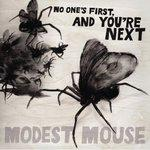

Music Reviews
-

Mount Eerie Wind's Poem
Elverum is as elusive and allusive as ever on his latest release.
Alan Shulman reviews... -

The Postmarks Memoirs at the End of the World
Indie pop Floridians give film composers a run for their money with their vastly orchestrated second full length of original material.
Juan Edgardo Rodríguez re-imagines his favorite film scores in his head... -
Still Life Still Girls Come Too
Why couldn't these Arts & Crafts newbies teach my Sex Ed class? This debut may sound like a quick-study but there's heart behind Still Life Still's perpetual walk of shame.
Ryan Pratt tests out a new drinking game... -
Tiny Vipers Life on Earth
Seattle based musician Jesy Fortino has created an intense yet beautiful album in Life On Earth.
Nick Fenn reviews... -
Health Get Color
Health has delivered on the promise of its debut album with this excellent follow up.
Andrew Baer's eardrums are bleeding, which is by no means a bad thing... -
The xx xx
Four south-London teenagers make their debut: sublimely sparse nocturnal pop flavoured by contemporary R&B.
Michael Skinnider reviews... -
Blitzen Trapper Black River Killer EP
The Portland sextet's latest release is tasteful Americana. Too tasteful, in fact.
Ryan Faughnder reviews... -

Julian Plenti Julian Plenti is... Skyscraper
Julian Plenti is... alone at the party for a reason. Nah, it's not that bad. If you like Interpol, and pretty much only if you like Interpol, check it.
Jaclyn Elgeness reviews... -
The Loves Three
Welsh Retro-bubblegum-pastiche merchants release their third album and put on their Brian Jonestown Massacre shoes.
Joe Rivers reviews... -

Modest Mouse No One's First, And You're Next
Modest Mouse releases odds and ends from the recording sessions of their last two albums — Good News for People Who Love Bad News (2004) and We Were Dead Before the Ship Even Sank (2007).
Michael Skinnider reviews...